DEV-268 · I4 서비스 점검 · 제안 보드(승인 전, 앱 코드 변경 없음)
공유 링크·홈에 도착해서 예약 내역을 보기까지 열 단계를 390 폭, 비로그인 첫 방문자로 직접 눌러 봤어요. 고른 옵션은 로그인 뒤에도 그대로 이어지고 화면도 대부분 정리돼 있어요. 걸리는 곳은 세 가지예요. ① 가격과 ‘마감’이 무엇을 뜻하는지 설명이 없어요. ② 계좌이체로 선결제한다는 사실과 환불 약속이 결정 지점에 보이지 않아요. ③ 공유 링크로 들어오면 첫 화면이 로그인을 먼저 요구해요.
A · 공유 링크 · 홈 (SCR-01)
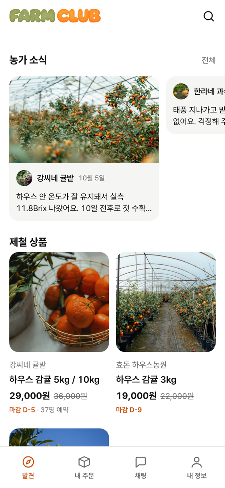
로컬 시드 · 390×844
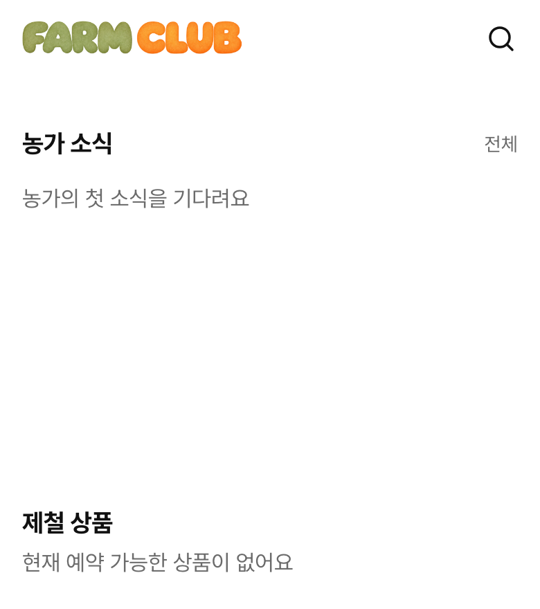
배포(vercel) 홈 · 11/11 실제 상태, 위 440만
ScrollView가 빈 글자 하나를 감싼 채 높이를 차지해서 생긴 것으로 추정해요(코드로만 확인).apps/consumer/src/app/(tabs)/index.tsx · packages/ui/src/Storefront.tsx(FeedCarousel)apps/consumer/src/app/(tabs)/index.tsx(상품 카드) · packages/ui/src/ProductPage.tsx · packages/ui/src/Storefront.tsxGET /api/products/p-house → dDay 5, stageEndsAt 2026-10-12(1단계 끝). 예약은 3단계 11월 9일까지 받아요.packages/ui/src/format.ts(closesText) · packages/ui/src/ProductPage.tsx:477 · 홈 카드B · 농가 페이지 = 농가 공유 링크 착지 (SCR-03 소식방)
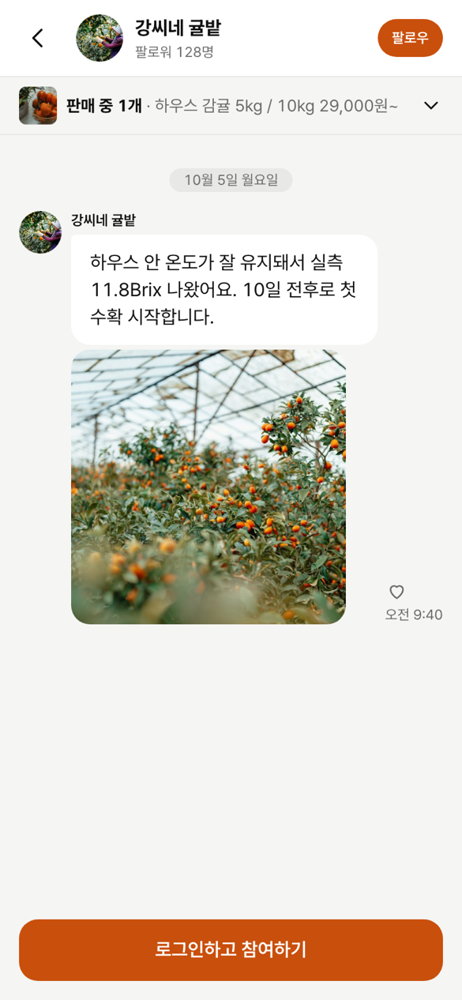
/farms/f-kang 비로그인 · 390×844
/farms/f-kang(농가 링크 /s/farms/:id가 여는 곳) 열기.apps/consumer/src/lib/FarmRoom.tsx · apps/consumer/src/app/(tabs)/farms/[farmId].tsx (DEV-295 소식방 결정 ‘판매 품목은 접힌 채 시작’과 함께 논의)hitSlop이 웹에서 누르는 영역을 넓히는지는 확인하지 못했어요. 넓히지 않는다면 N-02 위반이에요. 휴대폰 실기기 확인이 필요해요.apps/consumer/src/lib/FarmRoom.tsx · packages/ui/src/Button.tsx(compact hitSlop) · packages/ui/src/ChatBubble.tsxC · 상품 상세 (SCR-04)
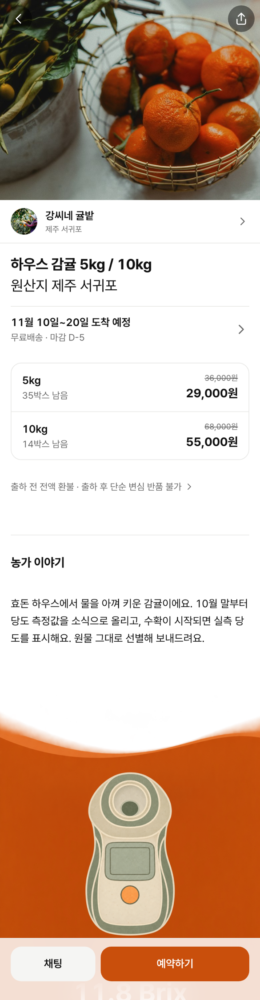
/products/p-house · 390×1500
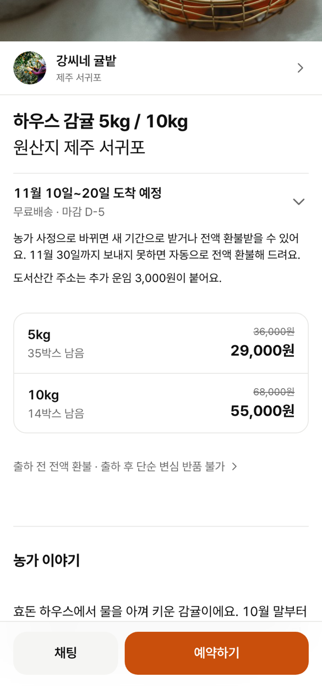
‘11월 10일~20일 도착 예정’을 펼쳐야 보이는 환불 약속
packages/ui/src/ProductPage.tsxreservedCount 37은 내려옴). ‘11월 30일까지 못 보내면 자동 전액 환불’은 도착 예정 줄을 펼쳐야 보여요. 팔로워 수는 DEV-293에서 뺐어요(API에 값 없음).packages/ui/src/ProductPage.tsx (데이터는 이미 있음: reservedCount, maxDelayUntil)packages/ui/src/BrixReading.tsx/products/:id. curl -A facebookexternalhit https://farmclub-consumer.vercel.app/products/x → og:title ‘farmclub · 수확 전에 예약하는 산지 직송 감귤’, og:image /og.jpg(모든 상품 같음). 농가 링크 /s/farms/:id는 농가 이름·사진이 나와요(curl 확인)./s/products/:id)를 새로 만들어야 해서 서버·vercel rewrite 작업이에요. 스펙(FEAT-19)은 농가 링크만 정하고 있어 동작 위반은 아니에요.apps/consumer/src/app/(tabs)/products/[productId].tsx(shareProduct) · server/app/farms/share.py · apps/consumer/vercel.jsonD · 옵션·수량 시트 → E · 로그인 안내·로그인 (SCR-04 시트, SCR-05)
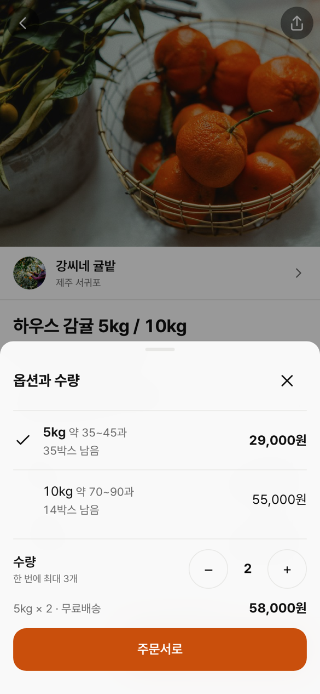
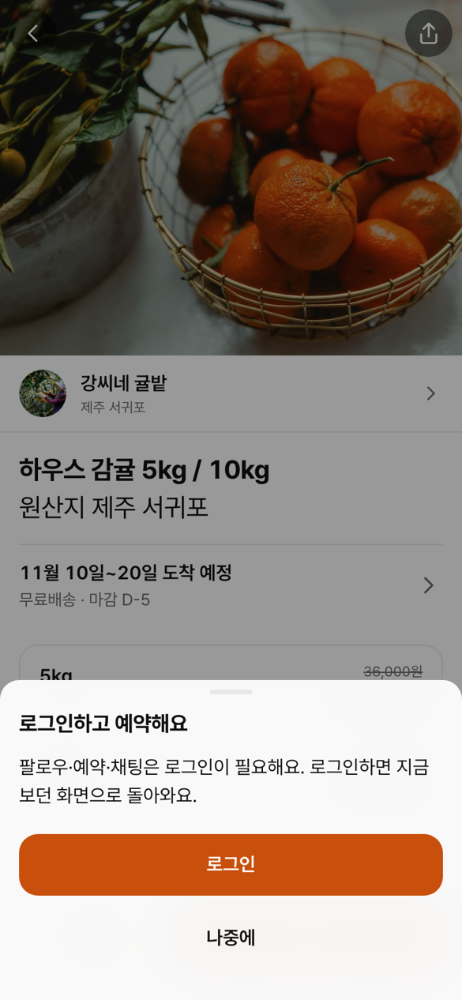
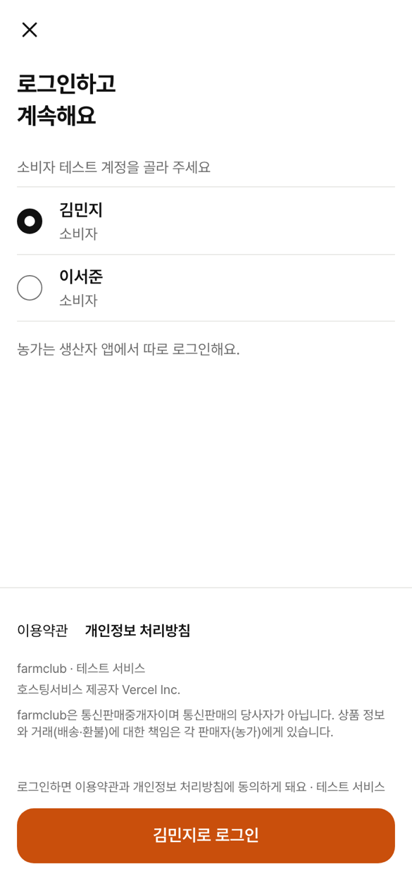
?optionId=opt-5&quantity=2로 그대로 이어져요(AC-01-1). 주문서에서 새로 고침해도 유지돼요. ‘채팅’ 관문은 로그인 뒤 바로 채팅 시작으로 이어져요.apps/consumer/src/lib/session.tsx(32행 제목표, 270행 본문)/products/p-house(주문서가 아님).resume)이 React 상태에만 있어요. 카카오 경로는 lib/kakao.ts가 sessionStorage에 따로 담아 보존해요(코드로만 확인, 카카오 실로그인은 하지 않음). 목 로그인(평가자 경로 ?evaluator=1 포함)에서 새로 고침·탭 복원 때 끊겨요.apps/consumer/src/lib/session.tsx · apps/consumer/src/app/login.tsxF · 주문서 (SCR-10)
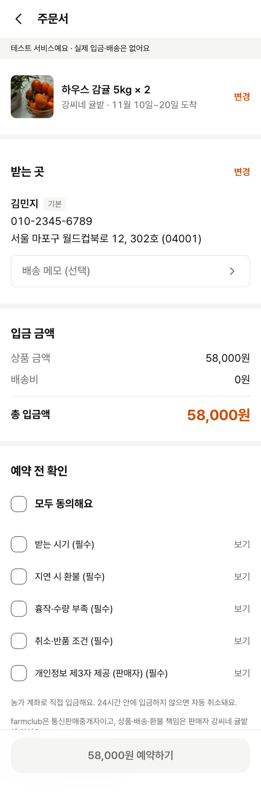
저장 배송지가 있는 김민지 · 390×1180
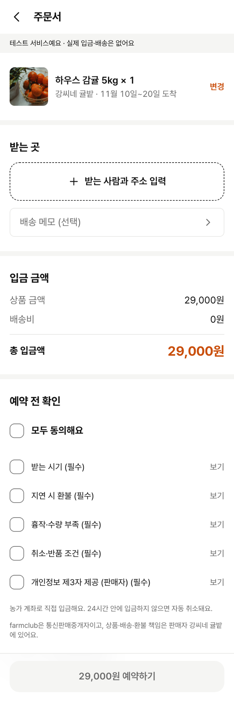
배송지 없는 이서준(첫 주문)
apps/consumer/src/app/checkout/[productId]/index.tsxaria-describedby에만 있어요.apps/consumer/src/app/checkout/[productId]/index.tsx · docs/spec/screens.md SCR-10 빈 상태apps/consumer/src/app/checkout/[productId]/index.tsxG · 입금 안내 (SCR-11) · 뒤로 가기
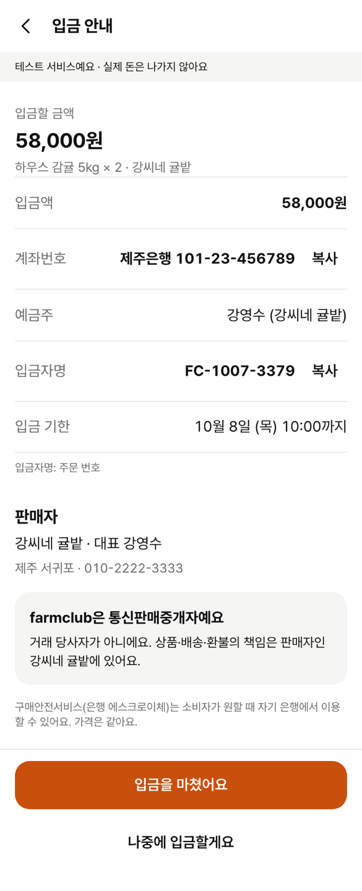
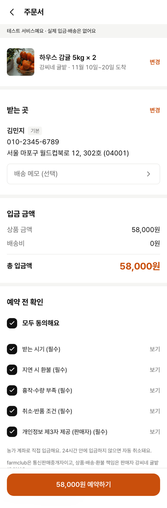
입금 안내 → 브라우저 뒤로
apps/consumer/src/app/checkout/[productId]/pay.tsx · apps/consumer/src/lib/DepositCard.tsxplaced)를 이 경우에도 쓰면 돼요.apps/consumer/src/app/checkout/[productId]/index.tsx(placedRef·placed)H · 주문 완료 (SCR-12) · 내 주문 (SCR-13)
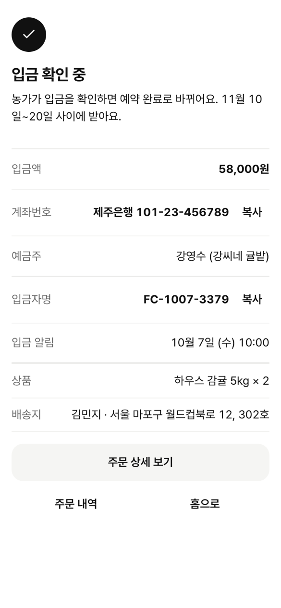
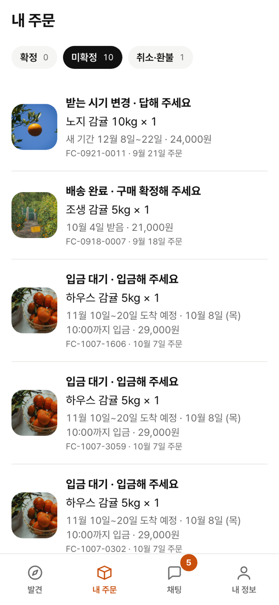
/orders/:id/done. 검정 체크 원 + ‘입금 확인 중’.apps/consumer/src/app/(tabs)/orders/[orderId]/done.tsxapps/consumer/src/app/(tabs)/orders/index.tsx · apps/consumer/src/lib/orderGroups.ts · docs/spec/functional/FEAT-10-order-history.md| # | 단계 | 한 줄 | 심각도 | 종류 | 크기 | 파일 |
|---|---|---|---|---|---|---|
| 1 | A 홈 | 상품 0개일 때 다음 행동 없음, 소식 빈칸 아래 큰 공백 | 막힘 | UX·버그 후보 | 작음 | (tabs)/index.tsx, ui/Storefront.tsx |
| 2 | A·C | 취소선 가격이 무엇과의 비교인지 없음 | 망설임 | 문구 | 작음 | (tabs)/index.tsx, ui/ProductPage.tsx |
| 3 | A·C | ‘마감 D-5’ = 지금 가격 끝인데 예약 마감으로 읽힘 | 망설임 | 문구 | 작음 | ui/format.ts, ui/ProductPage.tsx |
| 4 | B 농가 | 공유 링크 착지에서 로그인이 먼저, 상품은 접힘 | 막힘 | UX | 큼 | lib/FarmRoom.tsx |
| 5 | B 농가 | 좋아요 20·팔로잉 32·전송 40, 웹 터치 48 미만 가능 | 거슬림 | 버그 후보 | 작음 | lib/FarmRoom.tsx, ui/Button.tsx |
| 6 | C 상세 | 계좌 직접 입금이라는 결제 방식이 상세에 없음 | 망설임 | 문구 | 작음 | ui/ProductPage.tsx |
| 7 | C 상세 | 예약 인원 빠짐, 지연 시 자동 환불이 접혀 있음 | 망설임 | UX | 작음 | ui/ProductPage.tsx |
| 8 | C 상세 | 당도 블록 전면 강조색이 예약하기와 겨룸 | 거슬림 | UX | 큼 | ui/BrixReading.tsx |
| 9 | C 상세 | 상품 공유 미리보기가 사이트 공통 카드 | 망설임 | UX | 큼 | products/[productId].tsx, server/app/farms/share.py |
| 10 | E 관문 | 안내 시트에 고른 옵션·금액 없음, 본문 공통 문장 | 망설임 | 문구 | 작음 | lib/session.tsx |
| 11 | E 로그인 | 로그인 화면 새로 고침 시 고른 옵션 사라짐(목 로그인) | 거슬림 | 버그 후보 | 작음 | lib/session.tsx, app/login.tsx |
| 12 | F 주문서 | 입금 방식·24시간 자동 취소가 12 보조 글에 묻힘 | 망설임 | 문구 | 작음 | checkout/[productId]/index.tsx |
| 13 | F 주문서 | 꺼진 예약하기의 이유가 눈에 안 보임 | 망설임 | UX | 큼 | checkout/[productId]/index.tsx |
| 14 | F 주문서 | 강조색 네 곳(변경 둘·총 입금액·버튼) | 거슬림 | UX | 작음 | checkout/[productId]/index.tsx |
| 15 | G 입금 | 입금자명 바꾸라는 지시 없음, 금액 중복·금액 복사 없음 | 망설임 | 문구 | 작음 | checkout/[productId]/pay.tsx, lib/DepositCard.tsx |
| 16 | G 뒤로 | 뒤로 오면 이미 예약된 걸 모르고 같은 버튼이 켜져 있음 | 망설임 | UX | 작음 | checkout/[productId]/index.tsx |
| 17 | H 완료 | ‘입금 확인 중’이 언제 끝나는지 없음 | 거슬림 | 문구 | 작음 | orders/[orderId]/done.tsx |
| 18 | H 내 주문 | 첫 예약이 ‘미확정’ 탭에 — 문제 상태로 읽힘 | 거슬림 | 문구 | 큼 | orders/index.tsx, lib/orderGroups.ts |
개선 제안 · 영향 큰 순서 7개
모두 기존 토큰 안에서 풀었어요: Pretendard, 좌우 16, 본문 16 · 보조 14 · 메타 12 · 숫자 22, 주요 버튼 52 · 보조 48, 터치 48 이상, 강조색은 화면당 주요 버튼 하나. 새 부품은 없고 ListRow·Notice(면색 상자)·Sheet를 다시 써요. 문구는 해요체 한두 문장이에요.
제안 1 · 문제 6 · 7 · 12 — 결정 지점에 ‘알아 둘 세 가지’
하우스 감귤 5kg / 10kg
원산지 제주 서귀포
11월 10일~20일 도착 예정
무료배송 · 이 가격은 10월 12일까지
5kg
42박스 남음
10kg
14박스 남음
일찍 예약할수록 싸요. 마지막 기간 5kg 36,000원
37명이 예약했어요
농가 계좌로 직접 입금해요
예약하면 24시간 동안 물량을 잡아 둬요
11월 30일까지 못 보내면 전액 환불
보내기 전에는 언제든 취소할 수 있어요
ListRow 최소 48, 아이콘 24 보조색, 본문 16 + 보조 14. 지금 접혀 있는 ‘전액 환불’ 문장과 도착 줄 안의 ‘11월 30일 자동 환불’을 꺼내요.reservedCount(0이면 줄째 숨김, DEV-227 빈 값 규칙), maxDelayUntil(없으면 줄째 숨김). 지어낸 문구는 없어요.ProductPage.tsx 한 곳 + 생산자 구매자 미리보기 자동 반영 · e2e 단언 한두 줄(‘출하 전 전액 환불’ 문구)제안 2 · 문제 2 · 3 — 단계 가격을 한 번 말해 주기
강씨네 귤밭
하우스 감귤 5kg / 10kg
29,000원~
이 가격 D-5
37명 예약
효돈 하우스농원
하우스 감귤 3kg
19,000원
이 가격 D-9
일찍 예약할수록 싸요. 농가가 기간마다 가격을 정하고, 지금 예약하면 지금 가격으로 받아요.
dDay = 현재 기간 끝)은 그대로 두고 이름만 사실대로. 홈 카드·상세 도착 줄·농가 판매 품목 세 곳이 closesText 하나를 써서 한 줄 수정이에요.nextPrice)은 쓰지 않아요. 스펙의 ‘다음 기간 이득 문구 없음’을 지켜요. ‘기간마다 올라요’까지만 말해요.format.ts 1줄, 홈 카드·ProductPage.tsx 비교 가격 위치, 상자 1개제안 3 · 문제 4 — 공유 링크 착지
강씨네 귤밭
제주 서귀포 · 팔로워 128명
판매 중 1개
하우스 감귤 5kg / 10kg
11월 10일~20일 도착 · 37명 예약
29,000원~
10월 5일 월요일
하우스 안 온도가 잘 유지돼서 실측 11.8Brix 나왔어요. 10일 전후로 첫 수확 시작합니다.
FarmRoom.tsx 비로그인 분기, 소식방 담당(DEV-295)과 논의 · e2e discovery-and-gates의 ‘판매 품목 aria-expanded=false’ 단언이 비로그인 경로에서 바뀜제안 4 · 문제 15 — 입금 안내
10월 8일 (목) 오전 10:00까지 입금해 주세요
58,000원
복사하우스 감귤 5kg × 2 · 강씨네 귤밭
받는 분 통장 표시를 FC-1007-7017로 바꿔 보내 주세요
농가가 이 이름으로 입금을 찾아요. 이름이 다르면 확인이 늦어질 수 있어요.
판매자
강씨네 귤밭 · 대표 강영수 · 제주 서귀포
Noticepay.tsx·DepositCard.tsx(완료·주문 상세도 같은 카드라 금액 줄 처리는 화면별 옵션으로) · e2e ‘입금액’ 단언 확인제안 5 · 문제 10 — 로그인 안내 시트
로그인하고 예약해요
하우스 감귤 5kg × 2
강씨네 귤밭 · 11월 10일~20일 도착
58,000원
로그인하면 고른 옵션 그대로 주문서로 가요.
session.tsx:32) 옆에 본문표를 둬요.from=reserve면 ‘로그인하고 예약을 이어 가요’(SCR-05 제목 한 곳).requireLogin에 이미 넘기는 data(optionId·quantity)로 요약을 그려요 · e2e ‘로그인하고 예약해요’ 단언은 그대로제안 6 · 문제 16 · 12 · 14 — 주문서
이미 만든 예약이 있어요
FC-1007-7017 · 입금 대기 · 내일 오전 10:00까지
하우스 감귤 5kg × 2
강씨네 귤밭 · 11월 10일~20일 도착
받는 곳
변경김민지 · 010-2345-6789
서울 마포구 월드컵북로 12, 302호
총 입금액
58,000원
IDEMPOTENCY_MISMATCH)일 때만 나와요. 입금 안내로 넘어간 주문(placedRef)이 있으면 돌아오자마자 Notice + 하단 ‘입금 안내 보기’(DEV-293에 있는 부품 그대로).checkout/[productId]/index.tsx) · 4는 PM 결정 뒤제안 7 · 문제 1 — 상품이 없는 홈
FARM CLUB
지금은 예약할 수 있는 상품이 없어요
농가가 예약을 열면 여기에 보여요. 그사이 농가 소식을 둘러볼 수 있어요.
(tabs)/index.tsx 분기 3개 · AC-06-5 e2e 문구 유지스펙: SCR-04 ‘로그인 복귀 후 선택 값 보존’, SCR-05 ‘누른 화면·행동으로 복귀’.
/products/p-house/login?next=%2Fproducts%2Fp-house&from=reserve에서 새로 고침/products/p-house, 시트 닫힘(기대: /checkout/p-house?optionId=opt-10&quantity=2)원인(코드): resume이 session.tsx의 React 상태에만 있음. 카카오 경로는 sessionStorage로 보존.
스펙: AC-06-5는 문구만 정하지만 README 간격 규칙(섹션 사이 40)과 다름.
원인 추정: FeedCarousel(가로 ScrollView)이 빈 글자를 감싸고 높이를 차지. 로컬에서 소식을 지워 재현하지는 않았어요.
farmclub_dev268)에서 A~H 전부 Playwright로 390×844 터치 에뮬레이션으로 누름/s/farms/:id는 농가 이름·사진(배포 curl)hitSlop이 웹에서 누르는 영역을 넓히는지(문제 5) — 실기기 확인 필요승인되면 제안별로 개발 이슈를 나눠요. 작음 묶음(제안 1·2·4·5·6의 1~3·7)은 소비자 앱 한 PR로 할 수 있어요. 큼(제안 3, 문제 8·9·13·18)은 담당자와 먼저 정해요. 화면이 바뀌는 PR은 같은 PR에서 screens.md·Figma v6을 함께 고쳐요.